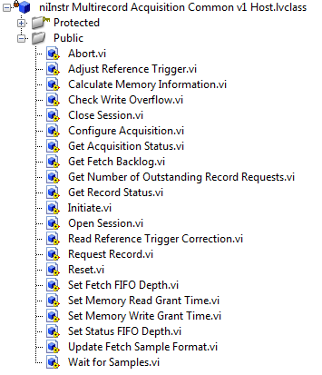
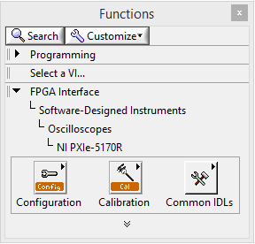
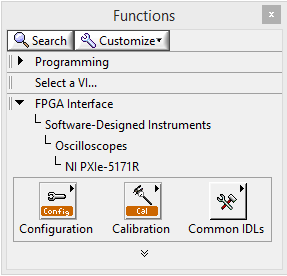
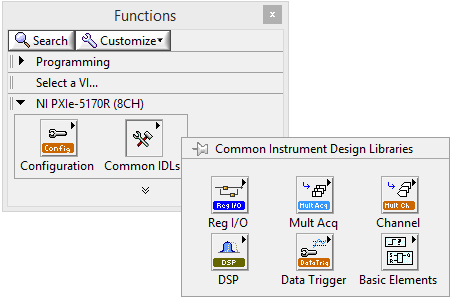
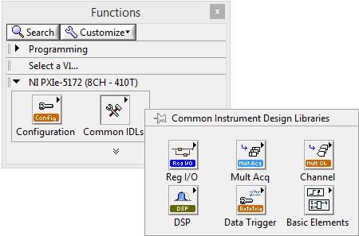

The Multirecord Acquisition (NI 5170) sample project provides a basic starting point for acquiring data with NI PXIe-5170R/5171R/5172 reconfigurable oscilloscopes.
Note Refer to the NI LabVIEW Instrument Design Libraries for Reconfigurable Oscilloscopes Readme for additional system requirements.
This sample project consists of four host VIs, which run on the host computer, and an FPGA VI, which runs on the FPGA within the device hardware. Each host VI instructs the FPGA VI on how to acquire data. The FPGA VI acquires data from the device input port.
You can run this sample project without installing the LabVIEW FPGA Module. however, you must install the LabVIEW FPGA Module to view, open, and edit the FPGA VI.
In the Project Explorer window, expand My Computer to see the following host VIs:
If you have the LabVIEW FPGA Module installed, you can open the FPGA VI, which is visible in the Project Explorer window at <Device Name>»Multirecord Acquisition (FPGA).vi. This VI was created using several instrument design libraries. Each instrument design library consists of VIs that facilitate three aspects of programming the FPGA:
You can see the instrument design libraries in the Project Explorer window by expanding the Dependencies»instr.lib project item. For example, the following screenshot shows some of the VIs in the Multirecord Acquisition instrument design library.
The Multirecord Acquisition instrument design library acquires data from the input connected to the device. The FPGA VI implements all aspects of this instrument design library (register bus, FPGA resources, process) in the following locations:
Code in the Acquisition Loop section uses niInstr Multirecord Acquisition v1 FPGA.lvclass:Write I16 Wrapper.vi, which writes the acquired samples into memory, conditioned on the trigger.
Code in the Fetch Loop section uses niInstr Multirecord Acquisition v1 FPGA.lvclass:Retrieve Record U16 Wrapper.vi and niInstr Multirecord Acquisition v1 FPGA.lvclass:Write to Fetch DMA FIFO U16 Wrapper.vi to retrieve the data, write to the Fetch DMA FIFO and transmit it to the fetch VIs on the host.
In addition to the Multirecord Acquisition instrument design library, this sample project demonstrates the usage of the following instrument design libraries:
When you are programming the NI 5170R/5171R/5172, access the instrument design libraries in the following palette locations:
| Functions»FPGA Interface»Software-Designed Instruments»Oscilloscopes»NI PXIe-5170R | Functions»FPGA Interface»Software-Designed Instruments»Oscilloscopes»NI PXIe-5171R | Functions»FPGA Interface»Software-Designed Instruments»Oscilloscopes»NI PXIe-5172 |
|---|---|---|
|  |  |
| Functions»NI PXIe-5170R | Functions»NI PXIe-5171R | Functions»NI PXIe-5172 |
|---|---|---|
|  |  |
The FPGA VI acquires data from the input port using the Multirecord Acquisition instrument design library to acquire data from the input port and store it in onboard memory.
The following five loops run in parallel in the FPGA VI:
Note Error handling in the instrument design libraries differs from error handling in NI-SCOPE driver software. Less error checking occurs in the instrument design libraries. For example, entering a value that is out of range may not result in an error. You can create custom error codes using the sample project error handlers, as described in the following section.
Device Session.lvclass is an aggregation of the instrument design libraries and can be customized to suit your application requirements. The following sections describe common modifications you can make to the FPGA VI. You must install the LabVIEW FPGA Module to access the FPGA VI. With this module installed, launch the FPGA VI from the Project Explorer window by opening My Computer»<Device Name>»Multirecord Acquisition (FPGA).vi. This code is user-owned, namespaced by the created project's name, and can be customized.
You can add custom triggering code in the Acquisition Loop section. In this section, triggering occurs after the DSP block. Trigger.vi is designed to generate triggers using two-channel source combinations. This VI can be modified to accept more than two channels. You can also add a custom trigger type not already provided by the Data Trigger instrument design library. You can also add additional trigger combination logic. This will require the Trigger Combination Type enum to be updated. To do so, open this enum from the Project Explorer window by selecting My Computer»FPGA Interface Typedefinitions.lvlib»Trigger Combination Type.ctl and add the new combination logic case to it. Any changes to the trigger logic can affect the delay in data path on the FPGA.
You can add custom DSP code in the appropriate locations in the Acquisition Loop section. Place custom DSP code after the Digital Correction VI, which contains code for the digital correction filter. You can also add custom DSP code in the Fetch Loop section, between the Retrieve Record VI and the Write to Fetch DMA FIFO VI. Any changes to the DSP logic can affect the delay in data path on the FPGA.
Digital I/O lines can be added as follows:
Note For more information about using PXI and PFI lines, refer to the NI Reconfigurable Oscilloscopes Help.
NI recommends designing and testing digital I/O code before integrating it with your main application code.
You can add custom error codes for Device Session.lvclass. Complete the following steps to add a custom error code:
For more information about using the NI 5170R/5171R/5172, refer to the NI Reconfigurable Oscilloscopes Help, which is included with the instrument design library installation. You can also find this document at ni.com/manuals.
Copyright
© 2014 National Instruments. All rights reserved.
Under the copyright laws, this publication may not be reproduced or transmitted in any form, electronic or mechanical, including photocopying, recording, storing in an information retrieval system, or translating, in whole or in part, without the prior written consent of National Instruments Corporation.
National Instruments respects the intellectual property of others, and we ask our users to do the same. NI software is protected by copyright and other intellectual property laws. Where NI software may be used to reproduce software or other materials belonging to others, you may use NI software only to reproduce materials that you may reproduce in accordance with the terms of any applicable license or other legal restriction.
End-User License Agreements and Third-Party Legal Notices
You can find end-user license agreements (EULAs) and third-party legal notices in the following locations:
Trademarks
LabVIEW, National Instruments, NI, ni.com, the National Instruments corporate logo, and the Eagle logo are trademarks of National Instruments Corporation. Refer to the Trademark Information at ni.com/trademarks for other National Instruments trademarks.
Other product and company names mentioned herein are trademarks or trade names of their respective companies.
Patents
For patents covering the National Instruments products/technology, refer to the appropriate location: Help»Patents in your software, the patents.txt file on your media, or the National Instruments Patent Notice at ni.com/patents.